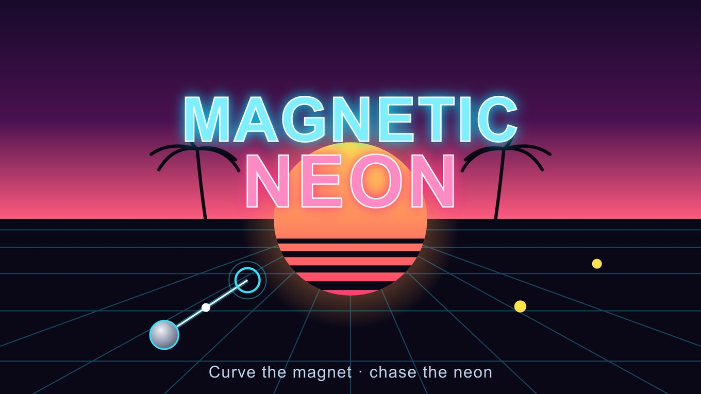

Main case study
Magnetic Neon
A one-touch synthwave runner. The guide has the real prompts from the afternoon its core loop was found, its sandbox numbers (847 plays, 5:24 average) and the full timeline to the catalog.
Play on Playgama →